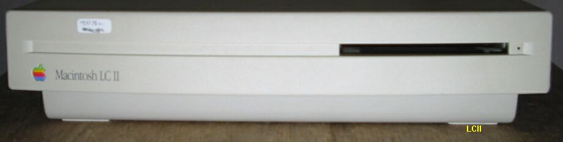
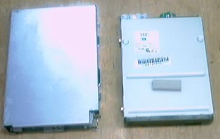

LCII

このLCIIは、近所のパソコン屋のジャンクコーナに、500円の値札が付けられて ポツンと置かれていたのを買ってきたものです。仕様は以下のようなものです。
・CPU MC68030 16MHz
・FPU MC68882 option プリントパターンはあるが、ソケットは付いていない。
・FDD
・HD 壊れていた。
・RAM 4MB＋2MB
・VRAM 256KB
購入時は、動作OKだったが、現在（2002/6/16）画面が、シマシマックになっており、修理を要する。
LCIIのシマシマック修理
蓋を開けてみたが、どこも壊れているようなところはない。一日中調べたが、 分からなかった。ちょっと日にちをおいてからもう一度見ると、どうもLCIIIと
LCIIのVRAM構成の違いに気が付かなかったようだ。LCIIIはオンボードでVRAM512K とSIMMソケット１個で、合計768KBまで増設できる。一方LCIIは、オンボードVRAM
なしで、SIMMソケットに256KBまたは、512KBのVRAMが実装できるようになっている。 このLCIIには、VRAMが付いていない。多分、他のマシンに流用されたしまったらしい。LCIIIから256KBのVRAMを外して、LCIIに挿したら復旧した。とんだお粗末な結果になってしまった。OSを漢字トーク７にし、１６色カラーでそれなりに動作するようになった。蓋を閉めると、FDDの位置が少し奥になっており、イジェクトできない。どうも、FDDもどこかに流用されてしまい、とりあえず、手元にあったPowerMac用
(SONY MPF52A)を取り付けてあるのが、あわないらしい。
LCIIのFDD交換

MACのFDDには何種類かあり、FDの挿入口に蓋の付いたタイプ(写真右側)は、PowerMACなど、 比較的新しいモデルに付いている。LCIIに合うのは蓋のないタイプで、ジャンク品
以外ないとおもわれるので、格安なのをを探していた。先週末、秋葉原へ行く機会 があり、露店でそれらしきFDD(写真左側)を１個百円で見付けた。２個購入し取り付けてみたが
１個はうまく取り付けられない。きちんと付いたのは、SONYのMP-F75W-02Gで、MP-F75W-21Gというもう１個は他の機種用らしい。動作は良好で、蓋をしてもきちん
と挿入、イジェクトができる。(2002/7/3記)
68Kマッキントッシュのページに戻る